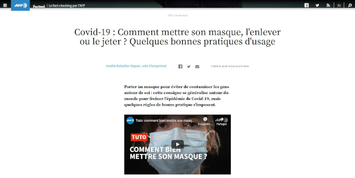
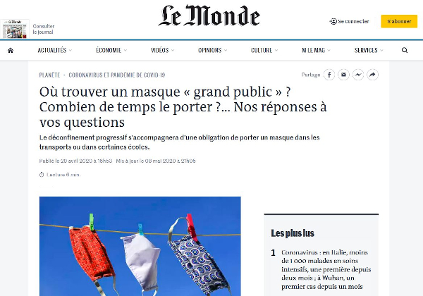

Présentation
Anciens articles
Contact
"Covid-19 : Comment mettre son masque, l'enlever ou le jeter ? Quelques bonnes pratiques d'usage" Article du site internet AFP Publié le Jeudi 14 mai 2020

Journal Le Monde du 20 avril 2020
